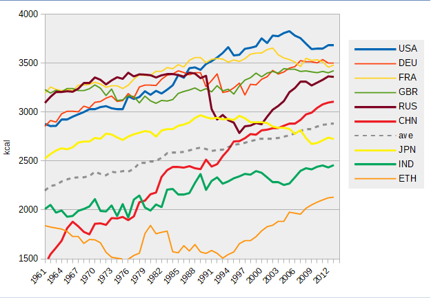

Cultural and religious diets

Many cultures hold some food preferences and some food taboos. Dietary choices can also define cultures and play a role in religion. For example, only kosher foods are permitted by Judaism, halal foods by Islam, and in Hinduism beef is restricted. In addition, the dietary choices of different countries or regions have different characteristics. This is highly related to a culture's cuisine.
Diet deficiencies
Dietary habits play a significant role in the health and mortality of all humans. Imbalances between the consumed fuels and expended energy results in either starvation or excessive reserves of adipose tissue, known as body fat. Poor intake of various vitamins and minerals can lead to diseases that can have far-reaching effects on health. For instance, 30% of the world's population either has, or is at risk for developing, iodine deficiency.It is estimated that at least 3 million children are blind due to vitamin A deficiency. Vitamin C deficiency results in scurvy. Calcium, Vitamin D, and phosphorus are inter-related; the consumption of each may affect the absorption of the others. Kwashiorkor and marasmus are childhood disorders caused by lack of dietary protein.
Moral, ethical, and health-conscious diet
Many individuals limit what foods they eat for reasons of morality, or other habit. For instance, vegetarians choose to forgo food from animal sources to varying degrees. Others choose a healthier diet, avoiding sugars or animal fats and increasing consumption of dietary fiber and antioxidants.Obesity, a serious problem in the western world, leads to higher chances of developing heart disease, diabetes, cancer and many other diseases.More recently, dietary habits have been influenced by the concerns that some people have about possible impacts on health or the environment from genetically modified food. Further concerns about the impact of industrial farming (grains) on animal welfare, human health, and the environment are also having an effect on contemporary human dietary habits. This has led to the emergence of a movement with a preference for organic and local food.
Nutrition and dietary problems
Between the extremes of optimal health and death from starvation or malnutrition, there is an array of disease states that can be caused or alleviated by changes in diet. Deficiencies, excesses, and imbalances in diet can produce negative impacts on health, which may lead to various health problems such as scurvy, obesity, or osteoporosis, diabetes, cardiovascular diseases as well as psychological and behavioral problems. The science of nutrition attempts to understand how and why specific dietary aspects influence health.
Nutrients in food are grouped into several categories. Macronutrients are fat, protein, and carbohydrates. Micronutrients are the minerals and vitamins. Additionally, food contains water and dietary fiber.
As previously discussed, the body is designed by natural selection to enjoy sweet and fattening foods for evolutionary diets, ideal for hunters and gatherers. Thus, sweet and fattening foods in nature are typically rare and are very pleasurable to eat. In modern times, with advanced technology, enjoyable foods are easily available to consumers. Unfortunately, this promotes obesity in adults and children alike.